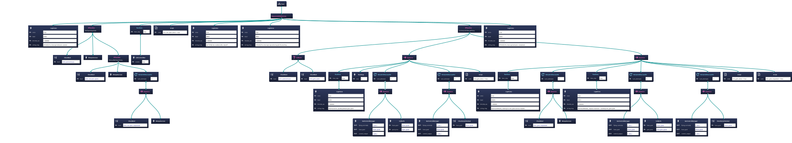

Behavior Trees
MainTree coordinates phase transitions; phase trees isolate preflight, takeoff, pre-intercept, interception, post-intercept, landing, and finalization behavior.
ROS 1 mission-level supervision for an interceptor UAV, using modular Behavior Trees, service gates, mission-state reporting, and external target guidance.
Status: Mission orchestration prototype with active integration work
The Behavior Tree Mission Manager is the high-level orchestration layer for an interceptor UAV mission. It coordinates mission phases, operator policies, service gates, payload sequencing, target guidance, and mission-state reporting while keeping low-level flight control outside its scope.
Flight actions are delegated to the MRS UAV System, payload actions are delegated to a payload manager, and shared message/service contracts are owned by the EAGLE message package. This page intentionally describes the public architecture only, without deployment-specific configuration or operational parameters.

The mission is structured around a MainTree for global orchestration and phase trees for PreflightPreparation, Takeoff, PreIntercept, Interceptor, PostIntercept, Land, and Finalize. A ManualTree supports operator-driven execution when the mission policy requires direct control.
A global Behavior Tree blackboard carries shared mission state between tree nodes. ROS services provide runtime gates and manual actions, while a MissionState publisher exposes the current mission phase and status for dashboards, logs, and external monitoring.
MainTree coordinates phase transitions; phase trees isolate preflight, takeoff, pre-intercept, interception, post-intercept, landing, and finalization behavior.
eagle_msgs owns shared message and service definitions used across the mission, payload, and integration layers.
eagle_payload_manager owns payload hardware/runtime truth, while the Mission Manager coordinates mission-level payload service timing.
eagle_mqtt bridges ground-station/API configuration and status into the ROS mission layer without exposing operational topics here.
Autonomous, supervised, and manual execution policies support repeatable automation and operator-driven validation.
MissionConfigure gates initial mission setup, with optional startup behavior that waits for ground-station configuration.
Preflight, offboard, and control-output readiness checks are encoded as mission-level gates before critical actions.
External target localization can guide pre-intercept behavior before onboard tracking takes over.
The mission layer supervises searching, following, intercepting, stopping, and disabled states at a high level.
Pause/resume, manual services, and supervised confirmation provide operator control without rewriting mission logic.
Payload/net service integration is coordinated by the mission phase rather than embedded in low-level flight control.
MissionState reporting supports operator dashboards, logs, and integration diagnostics.
The autonomous and supervised flows follow a modular sequence: PreflightPreparation, Takeoff, PreIntercept, Interceptor, PostIntercept, Land, and Finalize. The ManualTree remains available for operator-driven execution paths when the selected policy allows it.

External target localization can be used before onboard tracking takes over. The Mission Manager treats that guidance as a mission-level input for pre-intercept behavior and stale-reference handling, while keeping sensor and flight-stack responsibilities in their owning subsystems.

The interceptor phase supervises high-level state transitions and mission exits. It does not implement low-level tracking or flight control; those responsibilities remain delegated to the relevant UAV and payload subsystems.

The final mission stages coordinate post-intercept handling, landing, cleanup, and mission-state closure at the orchestration level.

This portfolio page intentionally focuses on public high-level architecture and omits deployment-specific parameters, operational topics, private URLs and mission configuration details.